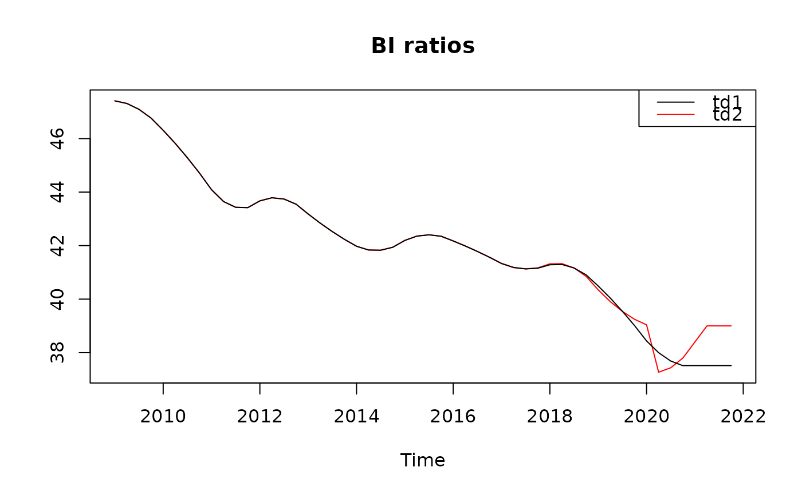
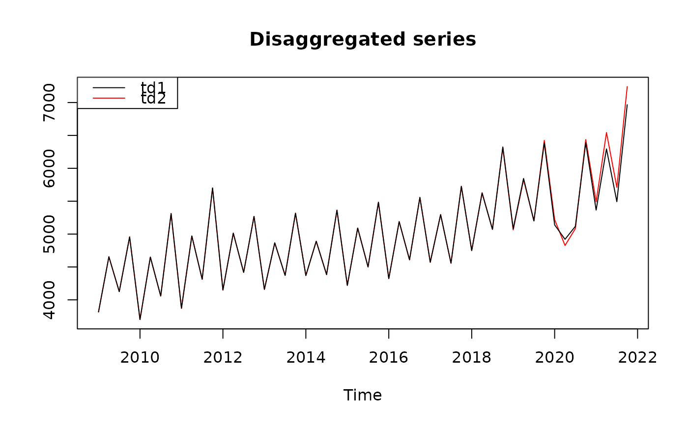

Temporal Disaggregation and Interpolation of a Time Series using the Model-Based Denton Proportional Method
Source:R/mbdenton.R
denton_modelbased.RdThe Denton proportional first difference (PFD) method can be expressed as a statistical model in a state-space representation. This formulation provides increased flexibility, including the ability to incorporate outliers, which correspond to level shifts in the Benchmark‑to‑Indicator (BI) ratio, that would otherwise induce unintended wave effects under the standard Denton PFD method. In addition, the approach allows the disaggregated series to be constrained (or 'frozen') at specific periods or prior to a given date by fixing the corresponding high‑frequency BI ratios.
Usage
denton_modelbased(
series,
indicator,
differencing = 1L,
conversion = c("Sum", "Average", "Last", "First", "UserDefined"),
conversion.obsposition = 1L,
outliers = NULL,
fixedBIratios = NULL
)Arguments
- series
A low-frequency time series to be disaggregated or interpolated. It must be either a
"ts"object or a numeric vector.- indicator
A high-frequency indicator series. It must be of the same class as
series.- differencing
Not yet implemented. This should be left equal to
1(corresponding to the Denton PFD method).- conversion
A character string specifying the conversion mode, typically
"Sum"(the default) or"Average". Other options are:"Last","First"and"UserDefined".- conversion.obsposition
An integer specifying the position of the low-frequency observations within the interpolated series (e.g. the 7th month of the year). This argument is used only for interpolation when
conversion = "UserDefined".- outliers
A list specifying the outlier periods and their magnitude. Each element must be provided as
"YYYY-MM-DD" = value, where the date identifies the period. The numeric value specifies the intensity of the outlier and corresponds to the relative value of the innovation variance (with1indicating the normal situation).- fixedBIratios
A list specifying the periods for which the Benchmark‑to‑Indicator (BI) ratios should be fixed. Each element must be provided as
"YYYY-MM-DD" = value, where the date identifies the period and the numeric value specifies the fixed BI ratio.
Value
An object of class "JD3_MBDENTON_RSLTS" is returned. The following are returned invisibly as a list:
estimation[[1]]disaggregated Time-Series, BI ratios, residuals and errors;likelihood[[2]]a list of test results.
See also
For more information, see the vignette:
utils::browseVignettes(), e.g. browseVignettes(package = "rjd3bench")
Examples
# Retail data, monthly indicator
Y <- rjd3toolkit::aggregate(rjd3toolkit::Retail$RetailSalesTotal, 1)
x <- rjd3toolkit::aggregate(rjd3toolkit::Retail$FoodAndBeverageStores, 4)
td <- denton_modelbased(Y, x, outliers = list("2000-01-01" = 100, "2005-07-01" = 100))
y <- td$estimation$edisagg
# qna data, quarterly indicator
data("qna_data")
Y <- ts(qna_data$B1G_Y_data[,"B1G_FF"], frequency = 1, start = c(2009,1))
x <- ts(qna_data$TURN_Q_data[,"TURN_INDEX_FF"], frequency = 4, start = c(2009,1))
td1 <- denton_modelbased(Y, x)
td2 <- denton_modelbased(Y, x, outliers = list("2020-04-01" = 100),
fixedBIratios = list("2021-04-01" = 39.0))
bi1 <- td1$estimation$biratio
bi2 <- td2$estimation$biratio
y1 <- td1$estimation$disagg
y2 <- td2$estimation$disagg
stats::ts.plot(bi2, bi1, main = "BI ratios",
gpars = list(col = c("red", "black")))
graphics::legend("topright", lty = 1, col = c("black", "red"),
legend = c("td1", "td2"))

stats::ts.plot(y2, y1, main = "Disaggregated series",
gpars = list(col = c("red", "black")))
graphics::legend("topleft", lty = 1, col = c("black", "red"),
legend = c("td1", "td2"))
